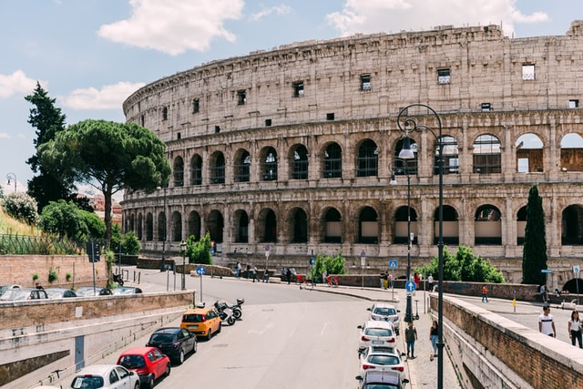
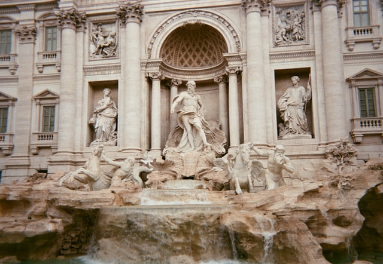
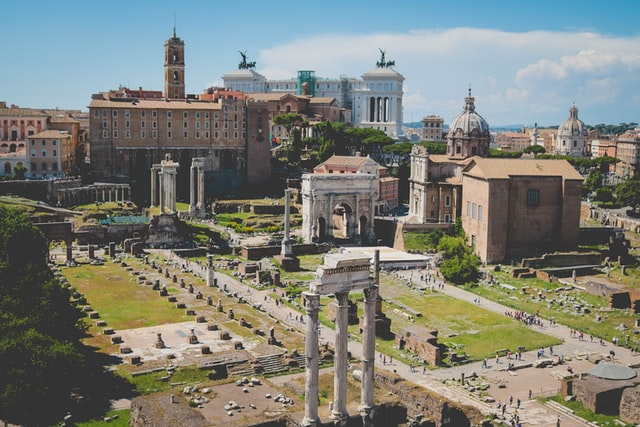

PLACES TO VISIT IN ROME

Colosseum, Rome
The Colosseum is an oval amphitheatre in the centre of the city of Rome, Italy, just east of the Roman Forum. It is the largest ancient amphitheatre ever built, and is still the largest standing amphitheatre in the world today, despite its age.

Vatican, Rome
Vatican City, a city-state surrounded by Rome, Italy, is the headquarters of the Roman Catholic Church. It's home to the Pope and a trove of iconic art and architecture. Its Vatican Museums house ancient Roman sculptures such as the famed “Laocoön and His Sons” as well as Renaissance frescoes in the Raphael Rooms and the Sistine Chapel, famous for Michelangelo’s ceiling.

Trevi Fountain, Rome
The Trevi Fountain is a fountain in the Trevi district in Rome, Italy, designed by Italian architect Nicola Salvi and completed by Giuseppe Pannini and several others. Standing 26.3 metres high and 49.15 metres wide, it is the largest Baroque fountain in the city and one of the most famous fountains in the world.
TOURIST ATTRACTIONS IN ROME

Cloaca Maxima, Rome
The Cloaca Maxima was one of the world's earliest sewage systems. Built during either the Roman Kingdom or early Roman Republic, it was constructed in Ancient Rome in order to drain local marshes and remove waste from the city.

Basilica Dei Santa XII Apostoli
Santi Dodici Apostoli, commonly known simply as Santi Apostoli, is a 6th-century Roman Catholic parish and titular church and minor basilica in Rome, Italy, dedicated originally to St. James and St. Philip, whose remains are kept here, and later to all Apostles.

Piazza Venezia
Piazza Navona is a public open space in Rome, Italy. It is built on the site of the Stadium of Domitian, built in the 1st century AD, and follows the form of the open space of the stadium. The ancient Romans went there to watch the agones, and hence it was known as "Circus Agonalis"